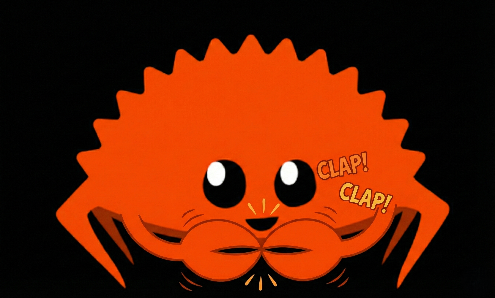

Open Source Alpha
Native. Rust. Open. Fork it. Build it. Own it.
We are stripping away the Electron bloat. Clapp is a native OpenClaw GUI forged in Rust & Tauri.
Binaries are compiling. While they bake, grab the source code and join the chaos.
